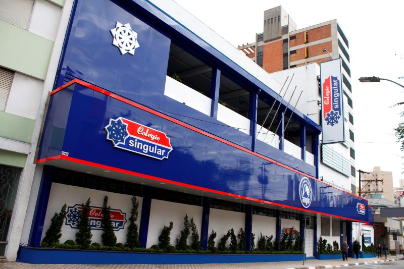

Um retorno às aulas ontem pela manhã (15) teve um clima atípico nos corredores do colégio. Após o esperado show da banda System of a Down, que ocorreu na quarta-feira à noite, os estudantes chegaram adormecidos, mas cheios de energia, exibindo orgulhosamente camisetas da banda e comentando sobre o show.
O evento, realizado no Autódromo de Interlagos, agitou milhares de admiradores da banda de metal alternativo, que não se apresentava no Brasil desde 2015. A paixão na apresentação do vocalista Serj Tankian e os clássicos ‘Chop Suey!’, ‘Toxicity’ e ‘Aerials’ colocaram o público no delírio.

Leia também outras matérias:
“Eu dormi às 4 da manhã, mas valeu cada segundo”
Disse Luiz Traumüller, aluno do 2º ano do ensino médio, que entrou na escola com a voz rouca de tanto cantar.
“A gente combinou de vir com a camiseta do show hoje. É quase um ritual”
Explicou ele, ao lado de outros colegas igualmente cansados.
Algumas instituições registraram uma leve retração na presença e no desempenho dos estudantes. Professores informaram turmas mais silenciosas e sonolentas do que o comum. "É possível ver que muita gente ainda está no ritmo do show", observou a professora Marilda, de matemática. "Mas é lindo ver até que ponto a música ainda mobiliza os jovens."
A administração de algumas escolas foi tolerante com a situação. "A gente entende que foi um evento cultural marcante, então preferimos levar o dia com mais leveza", disse a coordenadora pedagógica de uma escola de Santo André.
Com ou sem energia, a quinta-feira foi marcada por uma mistura de cansaço físico e satisfação emocional, reflexo de um evento que ficará na memória de muitos jovens